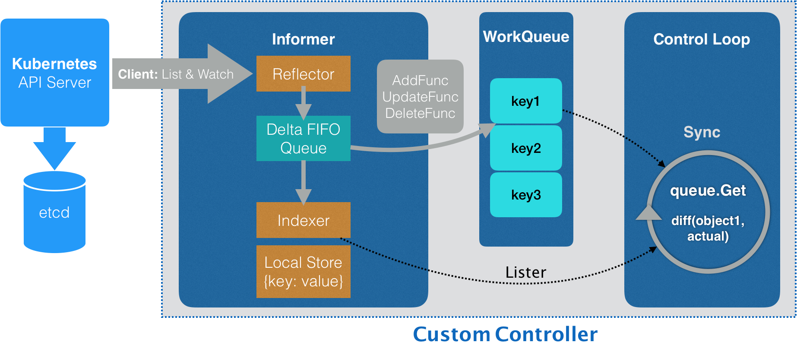

- 00 开篇词 打通“容器技术”的任督二脉.md.html
- 01 预习篇 · 小鲸鱼大事记（一）：初出茅庐.md.html
- 02 预习篇 · 小鲸鱼大事记（二）：崭露头角.md.html
- 03 预习篇 · 小鲸鱼大事记（三）：群雄并起.md.html
- 04 预习篇 · 小鲸鱼大事记（四）：尘埃落定.md.html
- 05 白话容器基础（一）：从进程说开去.md.html
- 06 白话容器基础（二）：隔离与限制.md.html
- 07 白话容器基础（三）：深入理解容器镜像.md.html
- 08 白话容器基础（四）：重新认识Docker容器.md.html
- 09 从容器到容器云：谈谈Kubernetes的本质.md.html
- 10 Kubernetes一键部署利器：kubeadm.md.html
- 11 从0到1：搭建一个完整的Kubernetes集群.md.html
- 12 牛刀小试：我的第一个容器化应用.md.html
- 13 为什么我们需要Pod？.md.html
- 14 深入解析Pod对象（一）：基本概念.md.html
- 15 深入解析Pod对象（二）：使用进阶.md.html
- 16 编排其实很简单：谈谈“控制器”模型.md.html
- 17 经典PaaS的记忆：作业副本与水平扩展.md.html
- 18 深入理解StatefulSet（一）：拓扑状态.md.html
- 19 深入理解StatefulSet（二）：存储状态.md.html
- 20 深入理解StatefulSet（三）：有状态应用实践.md.html
- 21 容器化守护进程的意义：DaemonSet.md.html
- 22 撬动离线业务：Job与CronJob.md.html
- 23 声明式API与Kubernetes编程范式.md.html
- 24 深入解析声明式API（一）：API对象的奥秘.md.html
- 25 深入解析声明式API（二）：编写自定义控制器.md.html
- 26 基于角色的权限控制：RBAC.md.html
- 27 聪明的微创新：Operator工作原理解读.md.html
- 28 PV、PVC、StorageClass，这些到底在说啥？.md.html
- 29 PV、PVC体系是不是多此一举？从本地持久化卷谈起.md.html
- 30 编写自己的存储插件：FlexVolume与CSI.md.html
- 31 容器存储实践：CSI插件编写指南.md.html
- 32 浅谈容器网络.md.html
- 33 深入解析容器跨主机网络.md.html
- 34 Kubernetes网络模型与CNI网络插件.md.html
- 35 解读Kubernetes三层网络方案.md.html
- 36 为什么说Kubernetes只有soft multi-tenancy？.md.html
- 37 找到容器不容易：Service、DNS与服务发现.md.html
- 38 从外界连通Service与Service调试“三板斧”.md.html
- 39 谈谈Service与Ingress.md.html
- 40 Kubernetes的资源模型与资源管理.md.html
- 41 十字路口上的Kubernetes默认调度器.md.html
- 42 Kubernetes默认调度器调度策略解析.md.html
- 43 Kubernetes默认调度器的优先级与抢占机制.md.html
- 44 Kubernetes GPU管理与Device Plugin机制.md.html
- 45 幕后英雄：SIG-Node与CRI.md.html
- 46 解读 CRI 与 容器运行时.md.html
- 47 绝不仅仅是安全：Kata Containers 与 gVisor.md.html
- 48 Prometheus、Metrics Server与Kubernetes监控体系.md.html
- 49 Custom Metrics_ 让Auto Scaling不再“食之无味”.md.html
- 50 让日志无处可逃：容器日志收集与管理.md.html
- 51 谈谈Kubernetes开源社区和未来走向.md.html
- 52 答疑：在问题中解决问题，在思考中产生思考.md.html
- 特别放送 2019 年，容器技术生态会发生些什么？.md.html
- 特别放送 基于 Kubernetes 的云原生应用管理，到底应该怎么做？.md.html
- 结束语 Kubernetes：赢开发者赢天下.md.html
- 捐赠
25 深入解析声明式API（二）：编写自定义控制器
你好，我是张磊。今天我和你分享的主题是：深入解析声明式API之编写自定义控制器。
在上一篇文章中，我和你详细分享了Kubernetes中声明式API的实现原理，并且通过一个添加Network对象的实例，为你讲述了在Kubernetes里添加API资源的过程。
在今天的这篇文章中，我就继续和你一起完成剩下一半的工作，即：为Network这个自定义API对象编写一个自定义控制器（Custom Controller）。
正如我在上一篇文章结尾处提到的，“声明式API”并不像“命令式API”那样有着明显的执行逻辑。这就使得基于声明式API的业务功能实现，往往需要通过控制器模式来“监视”API对象的变化（比如，创建或者删除Network），然后以此来决定实际要执行的具体工作。
接下来，我就和你一起通过编写代码来实现这个过程。这个项目和上一篇文章里的代码是同一个项目，你可以从这个GitHub库里找到它们。我在代码里还加上了丰富的注释，你可以随时参考。
总得来说，编写自定义控制器代码的过程包括：编写main函数、编写自定义控制器的定义，以及编写控制器里的业务逻辑三个部分。
首先，我们来编写这个自定义控制器的main函数。
main函数的主要工作就是，定义并初始化一个自定义控制器（Custom Controller），然后启动它。这部分代码的主要内容如下所示：
func main() {
...
cfg, err := clientcmd.BuildConfigFromFlags(masterURL, kubeconfig)
...
kubeClient, err := kubernetes.NewForConfig(cfg)
...
networkClient, err := clientset.NewForConfig(cfg)
...
networkInformerFactory := informers.NewSharedInformerFactory(networkClient, ...)
controller := NewController(kubeClient, networkClient,
networkInformerFactory.Samplecrd().V1().Networks())
go networkInformerFactory.Start(stopCh)
if err = controller.Run(2, stopCh); err != nil {
glog.Fatalf("Error running controller: %s", err.Error())
}
}
可以看到，这个main函数主要通过三步完成了初始化并启动一个自定义控制器的工作。
第一步：main函数根据我提供的Master配置（APIServer的地址端口和kubeconfig的路径），创建一个Kubernetes的client（kubeClient）和Network对象的client（networkClient）。
但是，如果我没有提供Master配置呢？
这时，main函数会直接使用一种名叫InClusterConfig的方式来创建这个client。这个方式，会假设你的自定义控制器是以Pod的方式运行在Kubernetes集群里的。
而我在第15篇文章《深入解析Pod对象（二）：使用进阶》中曾经提到过，Kubernetes 里所有的Pod都会以Volume的方式自动挂载Kubernetes的默认ServiceAccount。所以，这个控制器就会直接使用默认ServiceAccount数据卷里的授权信息，来访问APIServer。
第二步：main函数为Network对象创建一个叫作InformerFactory（即：networkInformerFactory）的工厂，并使用它生成一个Network对象的Informer，传递给控制器。
第三步：main函数启动上述的Informer，然后执行controller.Run，启动自定义控制器。
至此，main函数就结束了。
看到这，你可能会感到非常困惑：编写自定义控制器的过程难道就这么简单吗？这个Informer又是个什么东西呢？
别着急。
接下来，我就为你详细解释一下这个自定义控制器的工作原理。
在Kubernetes项目中，一个自定义控制器的工作原理，可以用下面这样一幅流程图来表示（在后面的叙述中，我会用“示意图”来指代它）：

图1 自定义控制器的工作流程示意图
我们先从这幅示意图的最左边看起。
这个控制器要做的第一件事，是从Kubernetes的APIServer里获取它所关心的对象，也就是我定义的Network对象。
这个操作，依靠的是一个叫作Informer（可以翻译为：通知器）的代码库完成的。Informer与API对象是一一对应的，所以我传递给自定义控制器的，正是一个Network对象的Informer（Network Informer）。
不知你是否已经注意到，我在创建这个Informer工厂的时候，需要给它传递一个networkClient。
事实上，Network Informer正是使用这个networkClient，跟APIServer建立了连接。不过，真正负责维护这个连接的，则是Informer所使用的Reflector包。
更具体地说，Reflector使用的是一种叫作ListAndWatch的方法，来“获取”并“监听”这些Network对象实例的变化。
在ListAndWatch机制下，一旦APIServer端有新的Network实例被创建、删除或者更新，Reflector都会收到“事件通知”。这时，该事件及它对应的API对象这个组合，就被称为增量（Delta），它会被放进一个Delta FIFO Queue（即：增量先进先出队列）中。
而另一方面，Informe会不断地从这个Delta FIFO Queue里读取（Pop）增量。每拿到一个增量，Informer就会判断这个增量里的事件类型，然后创建或者更新本地对象的缓存。这个缓存，在Kubernetes里一般被叫作Store。
比如，如果事件类型是Added（添加对象），那么Informer就会通过一个叫作Indexer的库把这个增量里的API对象保存在本地缓存中，并为它创建索引。相反，如果增量的事件类型是Deleted（删除对象），那么Informer就会从本地缓存中删除这个对象。
这个同步本地缓存的工作，是Informer的第一个职责，也是它最重要的职责。
而Informer的第二个职责，则是根据这些事件的类型，触发事先注册好的ResourceEventHandler。这些Handler，需要在创建控制器的时候注册给它对应的Informer。
接下来，我们就来编写这个控制器的定义，它的主要内容如下所示：
func NewController(
kubeclientset kubernetes.Interface,
networkclientset clientset.Interface,
networkInformer informers.NetworkInformer) *Controller {
...
controller := &Controller{
kubeclientset: kubeclientset,
networkclientset: networkclientset,
networksLister: networkInformer.Lister(),
networksSynced: networkInformer.Informer().HasSynced,
workqueue: workqueue.NewNamedRateLimitingQueue(..., "Networks"),
...
}
networkInformer.Informer().AddEventHandler(cache.ResourceEventHandlerFuncs{
AddFunc: controller.enqueueNetwork,
UpdateFunc: func(old, new interface{}) {
oldNetwork := old.(*samplecrdv1.Network)
newNetwork := new.(*samplecrdv1.Network)
if oldNetwork.ResourceVersion == newNetwork.ResourceVersion {
return
}
controller.enqueueNetwork(new)
},
DeleteFunc: controller.enqueueNetworkForDelete,
return controller
}
我前面在main函数里创建了两个client（kubeclientset和networkclientset），然后在这段代码里，使用这两个client和前面创建的Informer，初始化了自定义控制器。
值得注意的是，在这个自定义控制器里，我还设置了一个工作队列（work queue），它正是处于示意图中间位置的WorkQueue。这个工作队列的作用是，负责同步Informer和控制循环之间的数据。
实际上，Kubernetes项目为我们提供了很多个工作队列的实现，你可以根据需要选择合适的库直接使用。
然后，我为networkInformer注册了三个Handler（AddFunc、UpdateFunc和DeleteFunc），分别对应API对象的“添加”“更新”和“删除”事件。而具体的处理操作，都是将该事件对应的API对象加入到工作队列中。
需要注意的是，实际入队的并不是API对象本身，而是它们的Key，即：该API对象的<namespace>/<name>。
而我们后面即将编写的控制循环，则会不断地从这个工作队列里拿到这些Key，然后开始执行真正的控制逻辑。
综合上面的讲述，你现在应该就能明白，所谓Informer，其实就是一个带有本地缓存和索引机制的、可以注册EventHandler的client。它是自定义控制器跟APIServer进行数据同步的重要组件。
更具体地说，Informer通过一种叫作ListAndWatch的方法，把APIServer中的API对象缓存在了本地，并负责更新和维护这个缓存。
其中，ListAndWatch方法的含义是：首先，通过APIServer的LIST API“获取”所有最新版本的API对象；然后，再通过WATCH API来“监听”所有这些API对象的变化。
而通过监听到的事件变化，Informer就可以实时地更新本地缓存，并且调用这些事件对应的EventHandler了。
此外，在这个过程中，每经过resyncPeriod指定的时间，Informer维护的本地缓存，都会使用最近一次LIST返回的结果强制更新一次，从而保证缓存的有效性。在Kubernetes中，这个缓存强制更新的操作就叫作：resync。
需要注意的是，这个定时resync操作，也会触发Informer注册的“更新”事件。但此时，这个“更新”事件对应的Network对象实际上并没有发生变化，即：新、旧两个Network对象的ResourceVersion是一样的。在这种情况下，Informer就不需要对这个更新事件再做进一步的处理了。
这也是为什么我在上面的UpdateFunc方法里，先判断了一下新、旧两个Network对象的版本（ResourceVersion）是否发生了变化，然后才开始进行的入队操作。
以上，就是Kubernetes中的Informer库的工作原理了。
接下来，我们就来到了示意图中最后面的控制循环（Control Loop）部分，也正是我在main函数最后调用controller.Run()启动的“控制循环”。它的主要内容如下所示：
func (c *Controller) Run(threadiness int, stopCh <-chan struct{}) error {
...
if ok := cache.WaitForCacheSync(stopCh, c.networksSynced); !ok {
return fmt.Errorf("failed to wait for caches to sync")
}
...
for i := 0; i < threadiness; i++ {
go wait.Until(c.runWorker, time.Second, stopCh)
}
...
return nil
}
可以看到，启动控制循环的逻辑非常简单：
- 首先，等待Informer完成一次本地缓存的数据同步操作；
- 然后，直接通过goroutine启动一个（或者并发启动多个）“无限循环”的任务。
而这个“无限循环”任务的每一个循环周期，执行的正是我们真正关心的业务逻辑。
所以接下来，我们就来编写这个自定义控制器的业务逻辑，它的主要内容如下所示：
func (c *Controller) runWorker() {
for c.processNextWorkItem() {
}
}
func (c *Controller) processNextWorkItem() bool {
obj, shutdown := c.workqueue.Get()
...
err := func(obj interface{}) error {
...
if err := c.syncHandler(key); err != nil {
return fmt.Errorf("error syncing '%s': %s", key, err.Error())
}
c.workqueue.Forget(obj)
...
return nil
}(obj)
...
return true
}
func (c *Controller) syncHandler(key string) error {
namespace, name, err := cache.SplitMetaNamespaceKey(key)
...
network, err := c.networksLister.Networks(namespace).Get(name)
if err != nil {
if errors.IsNotFound(err) {
glog.Warningf("Network does not exist in local cache: %s/%s, will delete it from Neutron ...",
namespace, name)
glog.Warningf("Network: %s/%s does not exist in local cache, will delete it from Neutron ...",
namespace, name)
// FIX ME: call Neutron API to delete this network by name.
//
// neutron.Delete(namespace, name)
return nil
}
...
return err
}
glog.Infof("[Neutron] Try to process network: %#v ...", network)
// FIX ME: Do diff().
//
// actualNetwork, exists := neutron.Get(namespace, name)
//
// if !exists {
// neutron.Create(namespace, name)
// } else if !reflect.DeepEqual(actualNetwork, network) {
// neutron.Update(namespace, name)
// }
return nil
}
可以看到，在这个执行周期里（processNextWorkItem），我们首先从工作队列里出队（workqueue.Get）了一个成员，也就是一个Key（Network对象的：namespace/name）。
然后，在syncHandler方法中，我使用这个Key，尝试从Informer维护的缓存中拿到了它所对应的Network对象。
可以看到，在这里，我使用了networksLister来尝试获取这个Key对应的Network对象。这个操作，其实就是在访问本地缓存的索引。实际上，在Kubernetes的源码中，你会经常看到控制器从各种Lister里获取对象，比如：podLister、nodeLister等等，它们使用的都是Informer和缓存机制。
而如果控制循环从缓存中拿不到这个对象（即：networkLister返回了IsNotFound错误），那就意味着这个Network对象的Key是通过前面的“删除”事件添加进工作队列的。所以，尽管队列里有这个Key，但是对应的Network对象已经被删除了。
这时候，我就需要调用Neutron的API，把这个Key对应的Neutron网络从真实的集群里删除掉。
而如果能够获取到对应的Network对象，我就可以执行控制器模式里的对比“期望状态”和“实际状态”的逻辑了。
其中，自定义控制器“千辛万苦”拿到的这个Network对象，正是APIServer里保存的“期望状态”，即：用户通过YAML文件提交到APIServer里的信息。当然，在我们的例子里，它已经被Informer缓存在了本地。
那么，“实际状态”又从哪里来呢？
当然是来自于实际的集群了。
所以，我们的控制循环需要通过Neutron API来查询实际的网络情况。
比如，我可以先通过Neutron来查询这个Network对象对应的真实网络是否存在。
- 如果不存在，这就是一个典型的“期望状态”与“实际状态”不一致的情形。这时，我就需要使用这个Network对象里的信息（比如：CIDR和Gateway），调用Neutron API来创建真实的网络。
- 如果存在，那么，我就要读取这个真实网络的信息，判断它是否跟Network对象里的信息一致，从而决定我是否要通过Neutron来更新这个已经存在的真实网络。
这样，我就通过对比“期望状态”和“实际状态”的差异，完成了一次调协（Reconcile）的过程。
至此，一个完整的自定义API对象和它所对应的自定义控制器，就编写完毕了。
备注：与Neutron相关的业务代码并不是本篇文章的重点，所以我仅仅通过注释里的伪代码为你表述了这部分内容。如果你对这些代码感兴趣的话，可以自行完成。最简单的情况，你可以自己编写一个Neutron Mock，然后输出对应的操作日志。
接下来，我们就一起来把这个项目运行起来，查看一下它的工作情况。
你可以自己编译这个项目，也可以直接使用我编译好的二进制文件（samplecrd-controller）。编译并启动这个项目的具体流程如下所示：
# Clone repo
$ git clone https://github.com/resouer/k8s-controller-custom-resource$ cd k8s-controller-custom-resource
### Skip this part if you don't want to build
# Install dependency
$ go get github.com/tools/godep
$ godep restore
# Build
$ go build -o samplecrd-controller .
$ ./samplecrd-controller -kubeconfig=$HOME/.kube/config -alsologtostderr=true
I0915 12:50:29.051349 27159 controller.go:84] Setting up event handlers
I0915 12:50:29.051615 27159 controller.go:113] Starting Network control loop
I0915 12:50:29.051630 27159 controller.go:116] Waiting for informer caches to sync
E0915 12:50:29.066745 27159 reflector.go:134] github.com/resouer/k8s-controller-custom-resource/pkg/client/informers/externalversions/factory.go:117: Failed to list *v1.Network: the server could not find the requested resource (get networks.samplecrd.k8s.io)
...
你可以看到，自定义控制器被启动后，一开始会报错。
这是因为，此时Network对象的CRD还没有被创建出来，所以Informer去APIServer里“获取”（List）Network对象时，并不能找到Network这个API资源类型的定义，即：
Failed to list *v1.Network: the server could not find the requested resource (get networks.samplecrd.k8s.io)
所以，接下来我就需要创建Network对象的CRD，这个操作在上一篇文章里已经介绍过了。
在另一个shell窗口里执行：
$ kubectl apply -f crd/network.yaml
这时候，你就会看到控制器的日志恢复了正常，控制循环启动成功：
...
I0915 12:50:29.051630 27159 controller.go:116] Waiting for informer caches to sync
...
I0915 12:52:54.346854 25245 controller.go:121] Starting workers
I0915 12:52:54.346914 25245 controller.go:127] Started workers
接下来，我就可以进行Network对象的增删改查操作了。
首先，创建一个Network对象：
$ cat example/example-network.yaml
apiVersion: samplecrd.k8s.io/v1
kind: Network
metadata:
name: example-network
spec:
cidr: "192.168.0.0/16"
gateway: "192.168.0.1"
$ kubectl apply -f example/example-network.yaml
network.samplecrd.k8s.io/example-network created
这时候，查看一下控制器的输出：
...
I0915 12:50:29.051349 27159 controller.go:84] Setting up event handlers
I0915 12:50:29.051615 27159 controller.go:113] Starting Network control loop
I0915 12:50:29.051630 27159 controller.go:116] Waiting for informer caches to sync
...
I0915 12:52:54.346854 25245 controller.go:121] Starting workers
I0915 12:52:54.346914 25245 controller.go:127] Started workers
I0915 12:53:18.064409 25245 controller.go:229] [Neutron] Try to process network: &v1.Network{TypeMeta:v1.TypeMeta{Kind:"", APIVersion:""}, ObjectMeta:v1.ObjectMeta{Name:"example-network", GenerateName:"", Namespace:"default", ... ResourceVersion:"479015", ... Spec:v1.NetworkSpec{Cidr:"192.168.0.0/16", Gateway:"192.168.0.1"}} ...
I0915 12:53:18.064650 25245 controller.go:183] Successfully synced 'default/example-network'
...
可以看到，我们上面创建example-network的操作，触发了EventHandler的“添加”事件，从而被放进了工作队列。
紧接着，控制循环就从队列里拿到了这个对象，并且打印出了正在“处理”这个Network对象的日志。
可以看到，这个Network的ResourceVersion，也就是API对象的版本号，是479015，而它的Spec字段的内容，跟我提交的YAML文件一摸一样，比如，它的CIDR网段是：192.168.0.0/16。
这时候，我来修改一下这个YAML文件的内容，如下所示：
$ cat example/example-network.yaml
apiVersion: samplecrd.k8s.io/v1
kind: Network
metadata:
name: example-network
spec:
cidr: "192.168.1.0/16"
gateway: "192.168.1.1"
可以看到，我把这个YAML文件里的CIDR和Gateway字段修改成了192.168.1.0/16网段。
然后，我们执行了kubectl apply命令来提交这次更新，如下所示：
$ kubectl apply -f example/example-network.yaml
network.samplecrd.k8s.io/example-network configured
这时候，我们就可以观察一下控制器的输出：
...
I0915 12:53:51.126029 25245 controller.go:229] [Neutron] Try to process network: &v1.Network{TypeMeta:v1.TypeMeta{Kind:"", APIVersion:""}, ObjectMeta:v1.ObjectMeta{Name:"example-network", GenerateName:"", Namespace:"default", ... ResourceVersion:"479062", ... Spec:v1.NetworkSpec{Cidr:"192.168.1.0/16", Gateway:"192.168.1.1"}} ...
I0915 12:53:51.126348 25245 controller.go:183] Successfully synced 'default/example-network'
可以看到，这一次，Informer注册的“更新”事件被触发，更新后的Network对象的Key被添加到了工作队列之中。
所以，接下来控制循环从工作队列里拿到的Network对象，与前一个对象是不同的：它的ResourceVersion的值变成了479062；而Spec里的字段，则变成了192.168.1.0/16网段。
最后，我再把这个对象删除掉：
$ kubectl delete -f example/example-network.yaml
这一次，在控制器的输出里，我们就可以看到，Informer注册的“删除”事件被触发，并且控制循环“调用”Neutron API“删除”了真实环境里的网络。这个输出如下所示：
W0915 12:54:09.738464 25245 controller.go:212] Network: default/example-network does not exist in local cache, will delete it from Neutron ...
I0915 12:54:09.738832 25245 controller.go:215] [Neutron] Deleting network: default/example-network ...
I0915 12:54:09.738854 25245 controller.go:183] Successfully synced 'default/example-network'
以上，就是编写和使用自定义控制器的全部流程了。
实际上，这套流程不仅可以用在自定义API资源上，也完全可以用在Kubernetes原生的默认API对象上。
比如，我们在main函数里，除了创建一个Network Informer外，还可以初始化一个Kubernetes默认API对象的Informer工厂，比如Deployment对象的Informer。这个具体做法如下所示：
func main() {
...
kubeInformerFactory := kubeinformers.NewSharedInformerFactory(kubeClient, time.Second*30)
controller := NewController(kubeClient, exampleClient,
kubeInformerFactory.Apps().V1().Deployments(),
networkInformerFactory.Samplecrd().V1().Networks())
go kubeInformerFactory.Start(stopCh)
...
}
在这段代码中，我们首先使用Kubernetes的client（kubeClient）创建了一个工厂；
然后，我用跟Network类似的处理方法，生成了一个Deployment Informer；
接着，我把Deployment Informer传递给了自定义控制器；当然，我也要调用Start方法来启动这个Deployment Informer。
而有了这个Deployment Informer后，这个控制器也就持有了所有Deployment对象的信息。接下来，它既可以通过deploymentInformer.Lister()来获取Etcd里的所有Deployment对象，也可以为这个Deployment Informer注册具体的Handler来。
更重要的是，这就使得在这个自定义控制器里面，我可以通过对自定义API对象和默认API对象进行协同，从而实现更加复杂的编排功能。
比如：用户每创建一个新的Deployment，这个自定义控制器，就可以为它创建一个对应的Network供它使用。
这些对Kubernetes API编程范式的更高级应用，我就留给你在实际的场景中去探索和实践了。
总结
在今天这篇文章中，我为你剖析了Kubernetes API编程范式的具体原理，并编写了一个自定义控制器。
这其中，有如下几个概念和机制，是你一定要理解清楚的：
所谓的Informer，就是一个自带缓存和索引机制，可以触发Handler的客户端库。这个本地缓存在Kubernetes中一般被称为Store，索引一般被称为Index。
Informer使用了Reflector包，它是一个可以通过ListAndWatch机制获取并监视API对象变化的客户端封装。
Reflector和Informer之间，用到了一个“增量先进先出队列”进行协同。而Informer与你要编写的控制循环之间，则使用了一个工作队列来进行协同。
在实际应用中，除了控制循环之外的所有代码，实际上都是Kubernetes为你自动生成的，即：pkg/client/{informers, listers, clientset}里的内容。
而这些自动生成的代码，就为我们提供了一个可靠而高效地获取API对象“期望状态”的编程库。
所以，接下来，作为开发者，你就只需要关注如何拿到“实际状态”，然后如何拿它去跟“期望状态”做对比，从而决定接下来要做的业务逻辑即可。
以上内容，就是Kubernetes API编程范式的核心思想。
思考题
请思考一下，为什么Informer和你编写的控制循环之间，一定要使用一个工作队列来进行协作呢？
感谢你的收听，欢迎你给我留言，也欢迎分享给更多的朋友一起阅读。
© 2019 - 2023 Liangliang Lee. Powered by gin and hexo-theme-book.